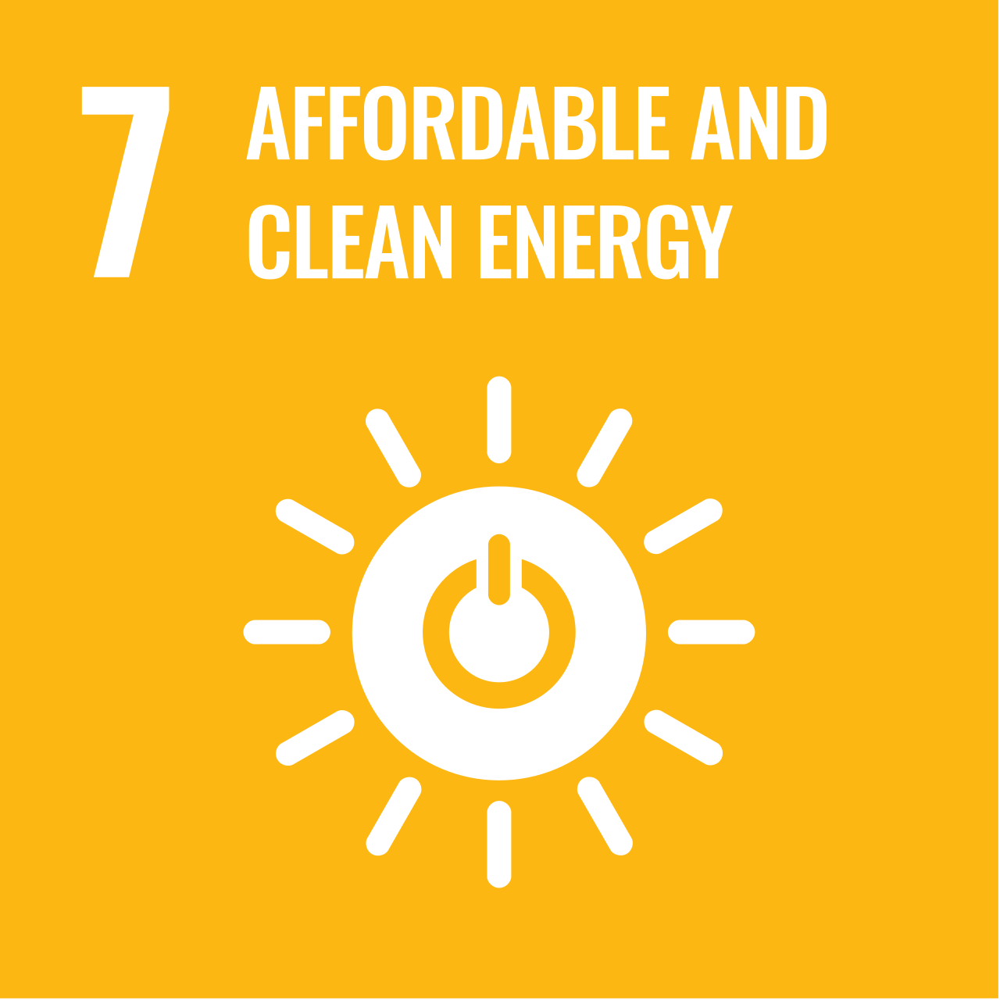

Ireland's Progress Towards SDG 7

Ireland's Progress Towards Sustainable Energy
Ireland has made significant progress in improving the sustainability of its energy sector. The country has increased the use of renewable electricity, particularly wind energy, while also encouraging households to improve energy efficiency. These actions contribute directly to Sustainable Development Goal 7 by supporting cleaner and more reliable energy systems.
In recent years, investment in renewable technologies and improvements in home energy performance have helped reduce greenhouse gas emissions and support Ireland's transition to a low-carbon economy.
Government Initiatives
The Irish Government supports households through several programmes designed to improve energy efficiency and reduce energy costs. The Sustainable Energy Authority of Ireland provides grants for home insulation, solar photovoltaic systems, heat pumps and other energy upgrades.
These initiatives encourage homeowners to modernise older buildings, reduce energy waste and increase the use of renewable energy technologies across the country.
Future Challenges
Although Ireland has made strong progress, several challenges remain. Many older homes still require significant energy upgrades, and dependence on fossil fuels continues in some sectors.
Future priorities include improving home insulation, increasing renewable electricity generation, expanding clean heating systems and achieving national climate targets while ensuring affordable energy for all households.